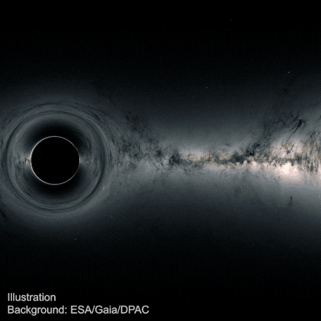
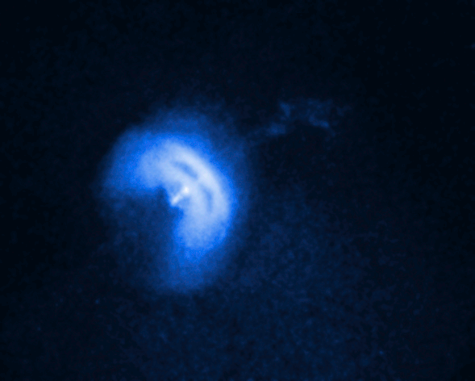
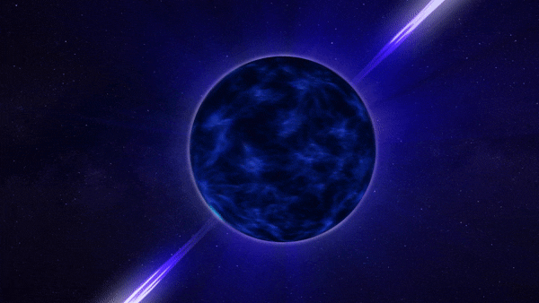
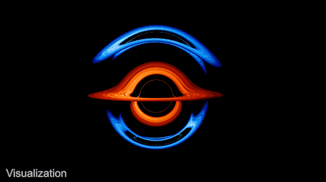
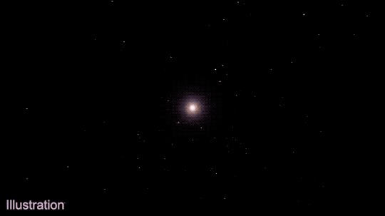
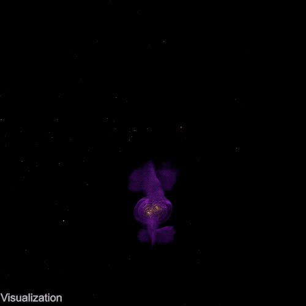

Путеводитель по экстремальным объектам Вселенной
Наблюдаемая Вселенная наполнена грандиозными физическими процессами, масштабы и мощности которых превосходят любое воображение. В областях пространства, где гравитационные силы достигают критических значений, материя сжимается до сверхъестественных плотностей, а искривление пространства-времени порождает явления, меняющие классические представления о законах физики. На этой странице собраны наиболее впечатляющие и загадочные космические структуры: от ненасытных черных дыр до релятивистских квазаров и пульсирующих нейтронных звезд.
1. Сверхмассивные черные дыры и гравитационный горизонт

Черная дыра представляет собой область пространства-времени с настолько колоссальным гравитационным притяжением, что покинуть её пределы не способны даже кванты света, движущиеся с максимально возможной скоростью во Вселенной. Граница этой невозвратной зоны называется горизонтом событий, а её характерный физический размер определяется радиусом Шварцшильда. Согласно общей теории относительности Альберта Эйнштейна, внутри горизонта событий вся поглощенная масса стягивается в гравитационную сингулярность — точку с бесконечной плотностью и нулевым объемом, где привычные уравнения физики теряют свою силу.
Сверхмассивные черные дыры располагаются в центрах подавляющего большинства крупных галактик, включая наш Млечный Путь (объект Стрелец A*). Масса таких гигантов может составлять от миллионов до десятков миллиардов масс нашего Солнца. Вещество, устремляющееся к черной дыре, испытывает мощнейшие приливные силы и начинает вращаться по спирали, образуя разогретый до колоссальных температур вращающийся диск, сияющий ярче миллиардов звезд одновременно.
2. Квазары: космические маяки Вселенной

Квазары (квазизвездные радиоисточники) являются одними из самых ярких астрономических объектов в наблюдаемом космосе. В действительности квазар — это активное ядро далекой молодой галактики на начальном этапе её эволюции, в центре которой сверхмассивная черная дыра с огромной скоростью поглощает окружающий межзвездный газ и пыль. Энергетический выход квазара столь велик, что маленькая область размером с нашу Солнечную систему производит в тысячи раз больше электромагнитного излучения, чем весь Млечный Путь целиком.
Важнейшей отличительной особенностью квазаров служат релятивистские джеты — гигантские струи плазмы, выбрасываемые перпендикулярно плоскости аккреционного диска вдоль магнитных полюсов. Скорость движения плазмы в джетах вплотную приближается к скорости света. Взаимодействуя с магнитными полями галактического масштаба, эти джеты генерируют мощное синхротронное излучение, регистрируемое современными радиотелескопами на расстояниях в миллиарды световых лет.
3. Пульсары: релятивистские радиомаяки

Пульсары — это быстро вращающиеся нейтронные звезды, образующиеся в результате катастрофического гравитационного коллапса массивных звезд после исчерпания ими термоядерного топлива. Диаметр пульсара обычно не превышает 20 километров, однако масса сопоставима с двумя массами Солнца. Плотность вещества нейтронной звезды столь невероятна, что одна чайная ложка такого материала на Земле весила бы сотни миллионов тонн.
Благодаря сохранению углового момента при сжатии звезды, пульсар вращается вокруг своей оси с ошеломляющей частотой — от нескольких оборотов до сотен раз в секунду (миллисекундные пульсары). Из магнитных полюсов звезды вырываются узкие пучки электромагнитных волн. При вращении эти лучи периодически пересекают луч зрения земного наблюдателя, создавая эффект космического маяка с идеальной ритмичностью, точности которой завидуют даже лучшие атомные часы человечества.
4. Аккреционные диски в тесных двойных системах

В тесных двойных звездных системах, состоящих из обычной звезды и компактного компаньона (белого карлика, нейтронной звезды или черной дыры), разворачивается процесс гравитационного перетекания вещества. Когда звезда-донор расширяется и заполняет свою критическую полость Роша, газ под воздействием гравитации устремляется к соседнему объекту через первую точку Лагранжа.
Поскольку падающий газ обладает начальным моментом вращения, он не может упасть напрямую на поверхность, а формирует сплюснутый вращающийся аккреционный диск. Внутри диска слои газа движутся с дифференциальной скоростью: внутренние слои обращаются значительно быстрее внешних. Возникающее вязкое трение преобразует кинетическую энергию движения в тепловую, разогревая материю до десятков миллионов градусов Кельвина и порождая мощное рентгеновское свечение.
5. Вспышки сверхновых и гравитационно-волновая астрономия

Финал жизненного цикла массивной звезды знаменуется грандиозным катаклизмом — вспышкой сверхновой. В течение считанных секунд термоядерный синтез в ядре звезды останавливается, железо-никелевое ядро сжимается под собственной тяжестью, а падающие внешние слои отскакивают от сверхплотного ядра, порождая ударную волну колоссальной энергии. В момент взрыва сверхновая выделяет энергию, сопоставимую со светимостью целой галактики, и разбрасывает в межзвездное пространство синтезированные тяжелые химические элементы — углерод, кислород, кремний и железо, из которых впоследствии формируются новые звездные системы и планеты.

Когда компактные космические объекты — пары черных дыр или нейтронных звезд — обращаются друг вокруг друга по сходящимся орбитам, они возмущают саму метрику окружающего пространства-времени, излучая гравитационные волны. Зафиксированное лазерно-интерферометрическими детекторами LIGO и Virgo в 2015 году излучение открыло принципиально новую эру в исследовании Вселенной: человечество получило возможность «слышать» далекий космос через непосредственные колебания ткани мироздания.